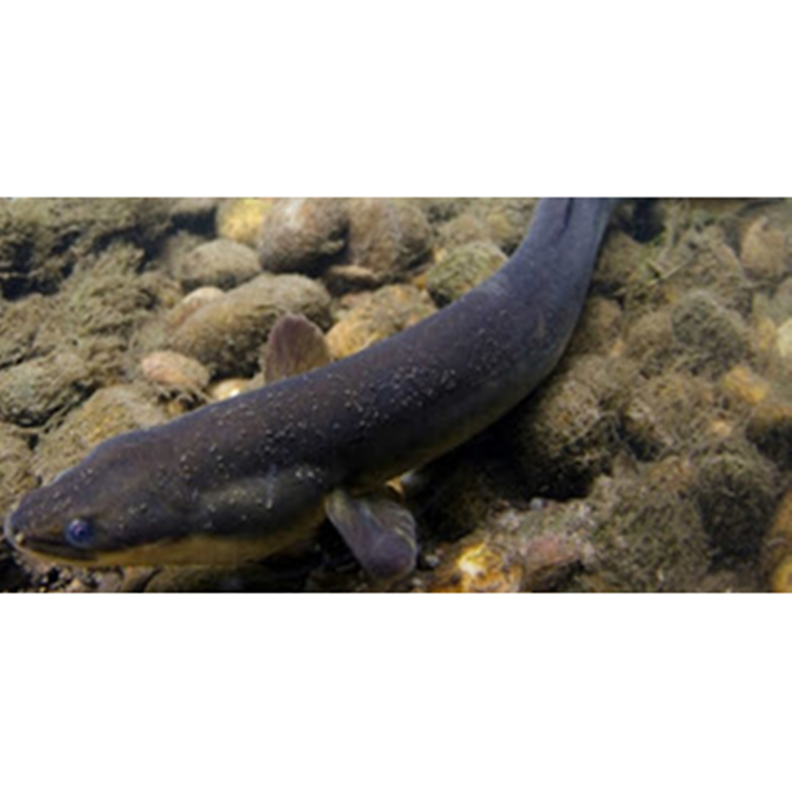

Ikan Sidat
Ikan Sidat atau belut adalah suatu kelompok ikan (ordo Anguilliformes) yang memiliki tubuh menyerupai ular. Di dalam ordo Anguilliformes terdapat 19 famili, 110 genera, dan 400 macam spesies. Selain hidup di air tawar dan air payau, sebagian besar spesies ini menghuni lautan. Di Indonesia umumnya disebut belut untuk spesies yang berukuran kecil, sementara nama sidat lebih kepada spesies yang memiliki ukuran besar.
Ikan Sidat memiliki karakteristik habitat yang unik, karena mampu beradaptasi di perairan tawar, estuari dan laut. Selintas sidat memang mirip dengan belut. Namun, bila dilihat lebih dekat, ikan yang bernama latin Anguilla spp ini berbeda dengan belut.Tubuh ikan sidat berbentuk silindris, kepalanya bulat telur, letak mulut terminal, dan memiliki ekor pipih meruncing. Panjang tubuh maksimal ikan ini bervariasi antara 15-200 cm dan beratnya dapat mencapai 22 kg tergantung jenis. Tubuhnya sangat lentur dan dilapisi sejenis lendir yang berfungsi sebagai mekanisme pertahanan diri dari predator alam.
Kandungan Ikan Sidat
| Protein (%) | Kalori (Kal) | Lemak (%) | Besi (mg) | Kalsium (mg) | Fosfor (mg) | Vit A (SI) | Vit B1 (mg) | Air (%) | BDD (%) |
|---|---|---|---|---|---|---|---|---|---|
| - | - | - | 0,54 | 22,11 | 235,59 | 3,220,84 | - | - | - |
Manfaat Ikan Sidat
- Mengandung Protein
- Meningkatkan Kecerdasan Otak
- Mempertahankan Tekanan Darah Normal
- Khasiat Ikan Sidat yang Cocok untuk Diet Sehat
- Memperbaiki Sirkulasi Kapiler
- Ikan Sidat Sebagai Antioksidan
- Mencegah Penyakit Arteriosklerosis
- Menyehatkan Mata
Ikan sidat mengandung protein berguna untuk memenuhi asupan yang dibutuhkan oleh tubuh agar terjaga kesehatannya, menambah energi, menghilangkan lemah, letih dan terhindar dari gizi buruk. Sangat bermanfaat sekali bagi para pelajar dan para pekerja supaya pikirannya lebih jernih dan staminanya meningkat.
Gizi dan vitamin yang terkandung dalam ikan sidat mampu meningkatkan kecerdasan baik anak-anak, remaja maupun orang dewasa. Asupan nutrisinya sangat bagus sekali untuk mengencerkan otak. Supaya lebih maksimal hasilnya, anda harus rajin belajar.
Mengonsumsi ikan sidat bisa menjaga tekanan darah supaya tetap normal. kandungan gizi dalam sidat ternyata mampu menstabilkan tekanan darah Anda. Apabila terlalu tinggi atau terlau rendah itu sama-sama tidak baik untuk kesehatan tubuh, paling baik adalah yang normal.
Karena rendah lemak ikan sidat sangat cocok untuk membantu program diet sehat. Jadi tidak bingung harus mengonsumsi apa apabila sedang diet. Asupan gizi serta vitamin pun terjamin, walaupun sedang berusaha mengurangi berat badan tidak akan membuat anda pucat tetapi malah membuat anda supaya segar dan bugar.
Daging ikan sidat bermanfaat membantu memperbaiki sistem sirkulasi kapiler dalam tubuh, yang berfungsi sebagai tempat pertukaran cairan, hormon, makanan, enzim dan juga bahan lainnya. Apabila rusak pembuluh ini dapat mengakibatkan komplikasi.
Dengan mengonsumsi ikan sidat berkhasiat bisa meningkatkan imunitas tubuh karena ikan tersebut beperan sebagai antioksidan alami. Sehingga, tingkat kesehatan anda akan lebih terjaga.
Belum banyak orang tau apa itu sebenarnya arteriosklerosis. Biasanya digunakan untuk menyatakan kekakuan pembuluh darah yang merupakan penyebab dari adanya stroke atau serangan jantung. Dapat dicegah melalui makan ikan sidat secara teratur.
Kesehatan mata merupakan hal yang sangat penting bagi makhluk hidup. Supaya terhindar dari berbagai gangguan atau penyakit, kita harus senantiasa menjaganya. Salah contohnya yaitu dengan rajin mengonsumsi ikan sidat, akan sangat luar biasa sekali khasiatnya bagi mata anda.